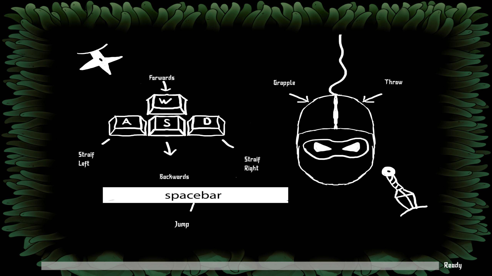
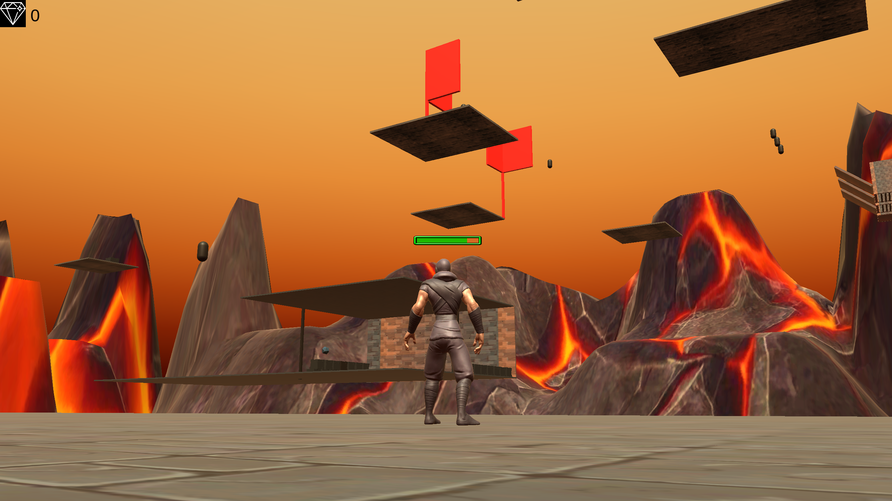
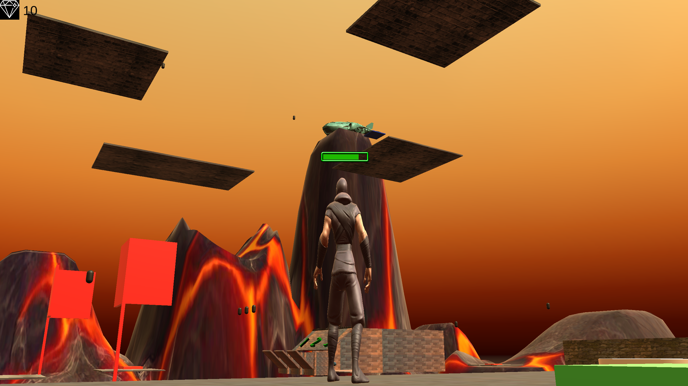
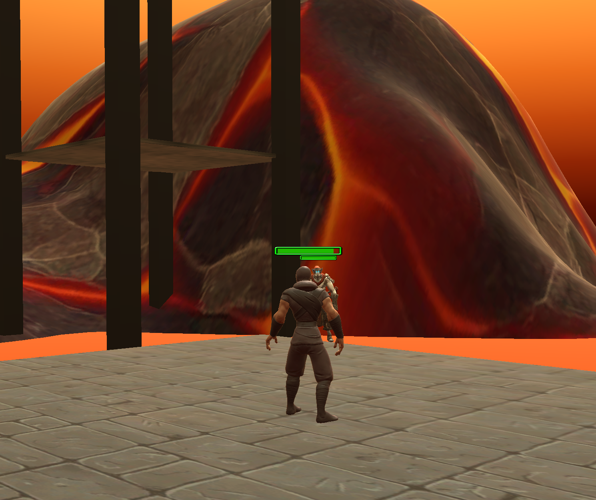

Swing, fight, escape. A physics-driven grappling platformer with enemies and puzzles.
Category: Game Projects | Role: Developer | GitHub
GrippyGroove is a third-person action platformer built in Unity. The main mechanic is a grappling hook used to swing across floating platforms, avoid lava, reach checkpoints, and survive enemy pressure.
The level mixes movement challenges with interaction puzzles, including timed switches, laser gates, hook-point reveals, and combat sections.
The design focuses on readable momentum. The player must aim, launch, swing, release, and land safely while reacting to hazards.
I worked on gameplay programming and systems integration, focusing on player movement, grappling, swing behaviour, checkpoint flow, and interaction feedback.
I contributed to combat and enemy interaction logic, including projectile behaviour, damage feedback, and the way enemies respond during traversal sections.
View Repo


